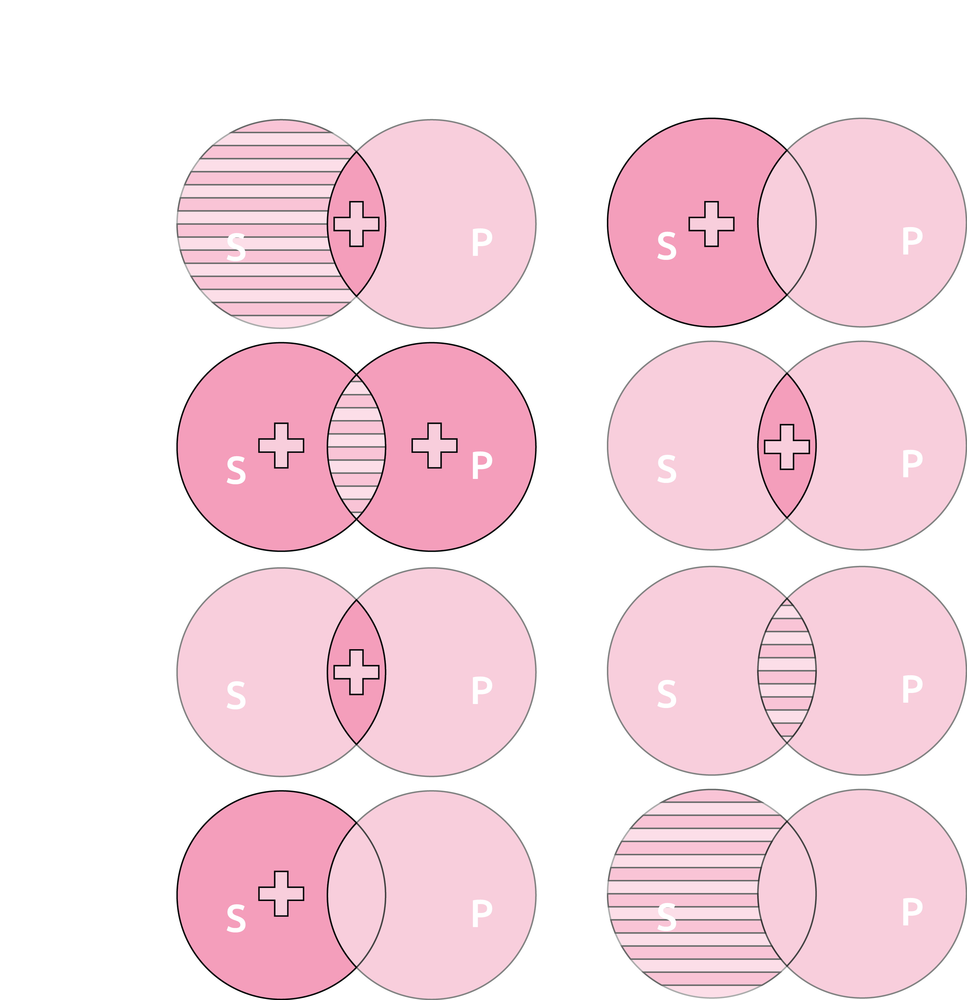

Funktory logiczne
Negacja ~p
Negacja zamienia wartość zdania na przeciwną.| p | ~p |
| 1 | 0 |
| 0 | 1 |
Koniunkcja p∧q
Koniunkcja jest prawdziwa wtedy, kiedy wszystkie jej zdania są prawdziwe.| p | q | p∧q |
| 1 | 1 | 1 |
| 0 | 1 | 0 |
| 1 | 0 | 0 |
| 0 | 0 | 0 |
Alternatywa
Zwykła p∨q
Alternatywa zwykła jest prawdziwa wtedy, kiedy co najmniej jedno zdanie jest prawdziwe.| p | q | p∨q |
| 1 | 1 | 1 |
| 0 | 1 | 1 |
| 1 | 0 | 1 |
| 0 | 0 | 0 |
Rozłączna p⊥q
Alternatywa rozłączna jest prawdziwa wtedy, kiedy dokładnie jedno zdanie jest prawdziwe.| p | q | p⊥q |
| 1 | 1 | 0 |
| 0 | 1 | 1 |
| 1 | 0 | 1 |
| 0 | 0 | 0 |
Dysjunkcja p/q
Dysjunkcja jest prawdziwa wtedy, kiedy przynajmniej jedno zdanie jest fałszywe.| p | q | p/q |
| 1 | 1 | 0 |
| 0 | 1 | 1 |
| 1 | 0 | 1 |
| 0 | 0 | 1 |
Równoważność p≡q
Równoważność jest prawdziwa wtedy, kiedy obydwa zdania mają taką samą wartość| p | q | p≡q |
| 1 | 1 | 1 |
| 0 | 1 | 0 |
| 1 | 0 | 0 |
| 0 | 0 | 1 |
Implikacja p⇒q
Implikacja jest fałszywa tylko wtedy, kiedy ze zdania prawdziwego wynika zdanie fałszywe.| q | P | p⇒q |
| 1 | 1 | 1 |
| 0 | 1 | 1 |
| 1 | 0 | 0 |
| 0 | 0 | 1 |
Równoważność alternatyw
Alternatywy są równe, niezależnie od kolejności wyrażeń
| ( | p | ∨ | q | ) | ≡ | ( | q | ∨ | p | ) |
| 1 | 1 | 1 | 1 | 1 | 1 | 1 | ||||
| 0 | 1 | 1 | 1 | 1 | 1 | 0 | ||||
| 1 | 1 | 0 | 1 | 0 | 1 | 1 | ||||
| 0 | 0 | 0 | 1 | 0 | 0 | 0 |
Rownoważność koniunkcji
Koniunkcje są równe, niezależnie od kolejności wyrażeń
| ( | p | ∧ | q | ≡ | ( | q | ∧ | p | ) | |
| 1 | 1 | 1 | 1 | 1 | 1 | 1 | ||||
| 0 | 0 | 1 | 1 | 1 | 0 | 0 | ||||
| 1 | 0 | 0 | 1 | 0 | 0 | 1 | ||||
| 0 | 0 | 0 | 1 | 0 | 0 | 0 |
Modus tollendo tollens
| [ | ( | p | ⇒ | q | ) | ∧ | ~ | q | ] | ⇒ | ( | ~ | q | ) |
| 1 | 1 | 1 | 0 | 0 | 1 | 1 | 0 | 1 | ||||||
| 0 | 1 | 1 | 0 | 0 | 1 | 1 | 1 | 0 | ||||||
| 1 | 1 | 0 | 1 | 1 | 0 | 1 | 0 | 1 | ||||||
| 0 | 1 | 0 | 1 | 1 | 0 | 1 | 1 | 0 |
Modus tollendo ponens
| [ | ( | p | ∨ | q | ) | ∧ | ( | ~ | p | ) | ] | ⇒ | q |
| 1 | 1 | 1 | 0 | 0 | 1 | 1 | 1 | ||||||
| 0 | 1 | 1 | 1 | 1 | 0 | 1 | 1 | ||||||
| 1 | 1 | 0 | 1 | 1 | 1 | 1 | 0 | ||||||
| 0 | 1 | 0 | 0 | 0 | 1 | 1 | 0 |
Modus ponendo tollens
| [ | ( | p | / | q | ) | ∧ | p | ] | ⇒ | ( | ~ | q | ) |
| 1 | 0 | 1 | 0 | 1 | 1 | 0 | 1 | ||||||
| 0 | 1 | 1 | 0 | 0 | 1 | 0 | 1 | ||||||
| 1 | 1 | 0 | 1 | 1 | 1 | 1 | 0 | ||||||
| 0 | 1 | 0 | 0 | 0 | 1 | 1 | 0 |
Modus ponendo ponens
| [ | ( | p | ⇒ | q | ) | ∧ | p | ] | ⇒ | q |
| 1 | 1 | 1 | 1 | 1 | 1 | 1 | ||||
| 0 | 1 | 1 | 0 | 0 | 1 | 1 | ||||
| 1 | 0 | 0 | 0 | 0 | 0 | 0 | ||||
| 0 | 1 | 0 | 0 | 0 | 1 | 0 |
I prawo de Morgana
| ~ | ( | p | ∧ | q | ) | ≡ | ( | ~ | p | ∨ | ~ | q | ) |
| 0 | 1 | 1 | 1 | 1 | 0 | 1 | 0 | 0 | 1 | ||||
| 1 | 0 | 0 | 1 | 1 | 1 | 0 | 1 | 0 | 1 | ||||
| 1 | 1 | 0 | 0 | 1 | 0 | 1 | 1 | 1 | 0 | ||||
| 1 | 0 | 0 | 0 | 1 | 1 | 0 | 1 | 1 | 0 |
II prawo de Morgana
| ~ | ( | p | ∨ | q | ) | ≡ | ( | ~ | p | ∧ | ~ | q | ) |
| 0 | 1 | 1 | 1 | 1 | 0 | 1 | 0 | 0 | 1 | ||||
| 0 | 0 | 1 | 1 | 1 | 1 | 0 | 0 | 0 | 1 | ||||
| 0 | 1 | 1 | 0 | 1 | 0 | 1 | 0 | 1 | 0 | ||||
| 1 | 0 | 0 | 0 | 1 | 1 | 0 | 1 | 1 | 0 |
Prawo transpozycji
(p⇒q)⇒(~q⇒~p)Jeżeli (jeżeli Bydgoszcz jest stolicą Polski, to Polska posiada kolonię na księżycu) to (jeżeli Polska nie posiada kolonii na księżycu to Bydgoszcz nie jest stolicą Polski).
Prawo sylogizmu hipotetycznego w postaci koniunkcyjnej
| [ | ( | p | ⇒ | q | ) | ∧ | ( | q | ⇒ | r | ) | ] | ⇒ | ( | p | ⇒ | r | ) |
| 1 | 1 | 1 | 1 | 1 | 1 | 1 | 1 | 1 | 1 | 1 | ||||||||
| 0 | 1 | 1 | 1 | 1 | 1 | 1 | 1 | 0 | 1 | 1 | ||||||||
| 1 | 0 | 0 | 0 | 0 | 1 | 1 | 1 | 1 | 1 | 1 | ||||||||
| 0 | 1 | 0 | 1 | 0 | 1 | 1 | 1 | 0 | 1 | 1 | ||||||||
| 1 | 1 | 1 | 0 | 1 | 0 | 0 | 1 | 1 | 0 | 0 | ||||||||
| 0 | 1 | 1 | 0 | 1 | 0 | 0 | 1 | 0 | 1 | 0 | ||||||||
| 1 | 0 | 0 | 0 | 0 | 1 | 0 | 1 | 1 | 0 | 0 | ||||||||
| 0 | 1 | 0 | 1 | 0 | 1 | 0 | 1 | 0 | 1 | 0 |
Prawo sylogizmu hipotetycznego w postaci bezkoniunkcyjnej
| ( | p | ⇒ | r | ) | ⇒ | [ | ( | q | ⇒ | r | ) | ⇒ | ( | p | ⇒ | r | ) | ] |
| 1 | 1 | 1 | 1 | 1 | 1 | 1 | 1 | 1 | 1 | 1 | ||||||||
| 0 | 1 | 1 | 1 | 1 | 1 | 1 | 1 | 0 | 1 | 1 | ||||||||
| 1 | 1 | 1 | 1 | 0 | 1 | 1 | 1 | 1 | 1 | 1 | ||||||||
| 0 | 1 | 1 | 1 | 0 | 1 | 1 | 1 | 0 | 1 | 1 | ||||||||
| 1 | 0 | 0 | 1 | 1 | 0 | 0 | 1 | 1 | 1 | 1 | ||||||||
| 0 | 1 | 0 | 1 | 1 | 0 | 0 | 1 | 0 | 1 | 0 | ||||||||
| 1 | 0 | 0 | 1 | 0 | 1 | 0 | 0 | 1 | 0 | 0 | ||||||||
| 0 | 1 | 1 | 1 | 0 | 1 | 0 | 1 | 0 | 1 | 0 |
Skrócone sprawdzanie tautologii
W celu szybkiego rozstrzygnięcia czy dany zapis jest tautologią można sprawdzić, czy możliwe jest uzyskanie wartości 0 bez żadnych sprzeczności.| ( | p | ∧ | q | ) | ⇒ | ( | p | ≡ | q | ) |
| 1 | 1 | 1 | 0 | 1 | 0 | 1 | ||||
| C | B | C | A | D | B | D |
| ( | p | ⇒ | q | ) | ⇒ | ( | p | ∨ | q | ) |
| 0 | 1 | 0 | 0 | 0 | 0 | 0 | ||||
| D | B | D | A | C | B | C |
| [ | ( | p | ⇒ | q | ) | ∧ | p | ] | ⇒ | q |
| 1 | 1 | 0 | 1 | 1 | 0 | 0 | ||||
| E | D | E | B | C | A | B |
Prawda logiczna
Prawda logiczna to tyle, co podstawienie prawa logicznego.Wyrażenie W jest prawdą logiczną wtedy i tylko wtedy, gdy jest to podstawienie jakiegoś prawa logicznego.
Jeżeli (temperatura jest ujemna to woda zamarza) to (jeżeli woda nie zamarza, to temperatura nie jest ujemna)
| ( | p | ⇒ | q | ) | ⇒ | ( | ~ | q | ⇒ | ~ | p | ) |
| 1 | 1 | 0 | 0 | 1 | 0 | 0 | 0 | 1 |
Jeżeli [(Jeżeli Bydgoszcz jest stolicą Polski to Polska posiada bazę na Marsie) i (Polska nie posiada bazy na Marsie)] to nie prawda, że Bydgoszcz jest stolicą Polski.
[(p⇒q)∧~q]∧~p
Modus tollendo tollens - prawda logicznaWynikanie logiczne
Z Z1 wynika wyrażenie Z2 jeżeli wyrażenie Z1⇒Z2 jest prawdą logiczną.Ze zdań Z1, Z2, ..., Zn wynika logicznie zdanie Zn+1 wtedy i tylko wtedy gdy implikacja której poprzednikiem są zdania Z1, Z2, ..., Zn, a następnikiem zdanie Zn+1 jest podstawieniem jakiegoś prawa logicznego
Przykład:
- Ustalić formułę zdaniową Z1
- Ustalić formułę zdaniową Z2
- Zapisać formuły w postaci implikacji
- Sprawdzić czy wyrażene jest tautologią.
Z2: Polska ma pogodę na księżycu
| ( | p | ∧ | q | ) | ⇒ | q |
| 1 | 0 | 0 | 0 |
Jest to prawo logiczne, więc zachodzi wynikanie logiczne.
Wnioskowanie logiczne
Wnioskowanie to układ zdań, w którym na podstawie zdań (co najmniej 1) uznanych za prawdziwe uznaje się za prawdziwe jakieś inne zdanie. Zdania na podstawie których uznaje się inne nazywa się przesłankami, a zdanie uznane za prawdziwe na podstawie innych zdań to wniosek.| P1 | Zdałam 1 egzamin w sesji. |
| P2 | Zdałam 2 egzamin w sesji. |
| ... | |
| Pn | Zdałam n-ty egzamin w sesji |
| W | Zdam każdy egzamin w sesji. |
| P1 | Nieprawda, że temperatura jest ujemna |
| P2 | Nieprawda, że woda zamarza |
| W | Nieprawda, że woda zamarza w nieujemnej temperaturze. |
Wnioskowanie dedukcyjne występuje wtedy, gdy wniosek wynika logicznie z przesłanek. Schematom wnioskowań dedukcyjnych odpowiadają prawa logiczne o postaci implikacji. Schematowi wnioskowania o postaci takiej jak w powyższych tabelach odpowiada formuła zdaniowa o postaci:
(P1∧P2∧ ... ∧Pn)⇒W
Formułę zdaniową odpowiadającą danemu schematowi wnioskowania nazywamy zasadą wnioskowania. Zasada wnioskowania to formuła zdaniowa odpowiadająca schematowi wnioskowania. Wnioskowanie dedykcyjne cechuje się tym, że z prawdziwych przesłanek zawsze uzyskamy prawdziwy wniosek.Przykład:
P1: Warszawa jest stolicą Polski
P2: Jeżeli temperatura jest ujemna to woda zamarza.
W: Woda zamarza.
| [ | p | ∧ | ( | q | ⇒ | r | ) | ] | ⇒ | r |
| 1 | 1 | 0 | 1 | 0 | 0 | 0 |
Błąd materialny występuje wtedy, gdy przesłanka wnioskowania (co najmniej 1) jest fałszywa.
Błąd formalny polega na tym, że ktoś wnioskuje wedłuk schematu zawodnego, niededukcyjnego, a uważa go za dedukcyjny.
Przykład błędu materialnego:
| P1 | Jeżeli temperatura wynosi +5°C to woda zamarza |
| P2 | Temperatura wynosi +5°C |
| W | Woda zamarza. |
[(p⇒q)∧p]⇒q
Mimo, że schematem jest prawo logiczne (modus ponendo ponens) to przesłanki są fałszywe, więc wniosek też. Wnioskowanie musi być pozbawione błędu materialnego.Przykład błędu formalnego:
| P1 | Jeżeli temperatura wynosi -10°C to woda zamarza |
| P2 | Woda zamarza |
| W | Temperatura wynosi -10°C |
[(p⇒q)∧q]⇒p
Ten konkretny przykład błędu formalnego to schemat wnioskowania redukcyjnego. Jest on zawodny, ale mimo to jest on częściowo użyteczny i często używany. Pozwala on osiągnąć pewne prawdopodobieństwo, ale nie gwarantuje prawdy.Tradycyjny rachunek nazw
Klasyczne zdanie kategoryczne ma jedną z 4 postaci:- Każde S jest P.
- Żadne S jest P.
- Niektóre S są P.
- Niektóre S nie są P.
W tradycyjnej terminologii nazwy nazywamy terminami.
Symbolicznie zapisujemy je w taki sposób:
S a P - Każde S jest P - Zdania ogólnotwierdzące - Każdy kot jest ssakiem
S e P - Żadne S nie jest P - Zdania ogólnoprzeczące P - Żaden kot nie jest psem
S i P - Niektóre S są P - Zdania szczegółowotwierdzące - Niektórzy stutenci są kierowcami
S o P - Niektóre S nie są P - Zdania szczegółowoprzeczące - Niektórzy studenci nie są kierowcami
| S a P | Każde S jest P | Każdy kot jest ssakiem | Zdania ogólnotwierdzące | Zdania ogólne |
| S e P | Żadne S nie jest P | Żaden kot nie jest psem | Zdania ogólnoprzeczące | |
| S i P | Niektóre S są P | Niektórzy studenci są kierowcami | Zdania szczegółowotwierdzące | Zdania szczegółowe |
| S o P | Niektóre S nie są P | Niektórzy studenci nie są kierowcami | Zdania szczegółowoprzeczące |
Ilość zdania - ogólny czy szczegółowe
Jakość zdania - twierdzące czy przeczące
S a P ⇒ S i P
Prawa kwadratu logicznego
| S a P | Przeciwieństwo | S e P |
| Podporządkowanie |
Sprzeczność |
Podporządkowanie |
| S i P | Podprzeciwieństwo | S o P |
Prawa kwadratu logicznego ukazują zależności pomiędzy zdaniami kategorycznymi o tych samych podmiotach i tych samych orzecznikach.
S - Podmiot (łac. subiectum)
P - Orzecznik (łac. predicatum)
a, i - twierdzę (łac. affirmo)
e, o - przeczę (łac. nego)
Zdaniem podmiotowo-orzecznikowym jest zdanie:
A jest B.
Jan jest adwokatem.
Przeciwieństwo
Zdania przeciwne mogą być oba prawdziwe, ale nie oba fałszywe.Jeżeli prawdą jest że każdy kot jest ssakiem, to prawdą jest też to, że nieprawda, że żaden kot nie jest ssakiem.
Sprzeczność
Spośród zdań sprzecznych zawsze jedno jest prawdziwe a drugie fałszywe.
S a P ≡ ~(S o P)
S e P ≡ ~(S i P)
S i P ≡ ~(S e P)
S o P ≡ ~(S a P)
Podprzeciwieństwo
Dla zdań podprzeciwnych jest zależność odwrotna niż dla zdań przeciwnych. Nie mogą być oba fałszywe, ale mogą być oba prawdziwe.
~(S i P) ⇒ S o P
~(S o P) ⇒ S i P
Podporządkowanie
Zdania szczegółowe są podporządkowane zdnaniom ogólnym w obrębie tej jakości zdania.
S a P ⇒ S i P
S e P ⇒ S o P
Diagramy Venna
S a P - Nie istnieją S które nie są PS e P - Nie istnieją S które są P
S i P - Istnieją takie S które równocześnie są P
S o P - Istnieją takie S które równocześnie nie są P
Dla praw kwadratu logicznego o postaci równoważności diagram pierwszego członu jest taki sam jak diagram drugiego członu.
S a P ≡ ~(S o P)
S i P ≡ ~(S e P)
W przypadku prawa logicznego o postaci implikacji na podstawie diagramu poprzednika może być przyjęty diagram następnika przy dodatkowym założeniu o niepustości nazw (jeżeli zachodzi taka potrzeba).

Konwersje
Konwercja prosta
Konwersji prostej podlegają zdania:S e P
S i P
S e P ≡ P e S
S i P ≡ P i S
Konwersja złożona
Konwersji złożonej podlega zdanie:S a P
Można ją zapisać w formie:P i S ⇒ S a P
Obwersja
Nazwa negatywna - nie-pies: wszystko co nie jest psem.Zakres nazwy połączony z zakresem nazwy negatywnej dają w połączeniu nazwę uniwersalną.
S' ≡ nie-S
Negacja przynazwowa (~) ma inne znaczenie niż negacja przyzdaniowa (').
S a P ≡ S e P'
S e P ≡ S a P'
S i P ≡ S o P'
S o P ≡ S i P'
Diagram Carolla
| S a P ≡ S e P' | ||
| P | P' | |
| S | + | |
| S' | + | |
| S e P ≡ S a P' | ||
| P | P' | |
| S | + | |
| S' | + | |
| S i P ≡ S o P' | ||
| P | P' | |
| S | + | |
| S' | ||
| S o P ≡ S i P' | ||
| P | P' | |
| S | + | |
| S' | ||
Kontrapozycja
Kontrapozycja zupełna
Podlegają jej zdania:S a P
S o P
Kontrapozycje zupełne i proste:
| S a P ≡ P' a S' | ||
| P | P' | |
| S | + | |
| S' | + | |
| S o P ≡ P' o S' | ||
| P | P' | |
| S | + | |
| S' | ||
Kontrapozycja zupełna i ograniczona:
| S e P ≡ P' o S' | ||
| P | P' | |
| S | + | |
| S' | + | |
Kontrapozycja częściowa
Kontrapozycje częściowe i proste:
S a P ≡ P' e S
S o P ≡ P' i S
S e P ⇒ P' i S
Inwersja
Inwersje zupełne:
S a P ⇒ S' e P'
S e P ⇒ S' a P'
Inwersje częściowe:
S a P ⇒ S' o P
S e P ⇒ S' i P
Sylogistyka
Sylogizm to to wnioskowanie złożone z dwóch przesłanek i wniosku. Przesłanki i wniosek są zdaniami kategorycznymi. W przesłankach występuje jeden termin wspólny, który nie występuje we wniosku, a każdy z terminów wniosku występuje w jednej i tylko jednej przesłance.Przykład:
P1: Każdy ssak jest zwierzęciem.
P2: Każdy kot jest ssakiem.
W: Każdy kot jest zwierzęciem
S - Kot
P - Zwierzę
M - Ssak
| P1 | M a P |
| P2 | S a M |
| W | S a P |
Podmiot wniosku - termin mniejszy
Orzecznik wniowsku - termin większy